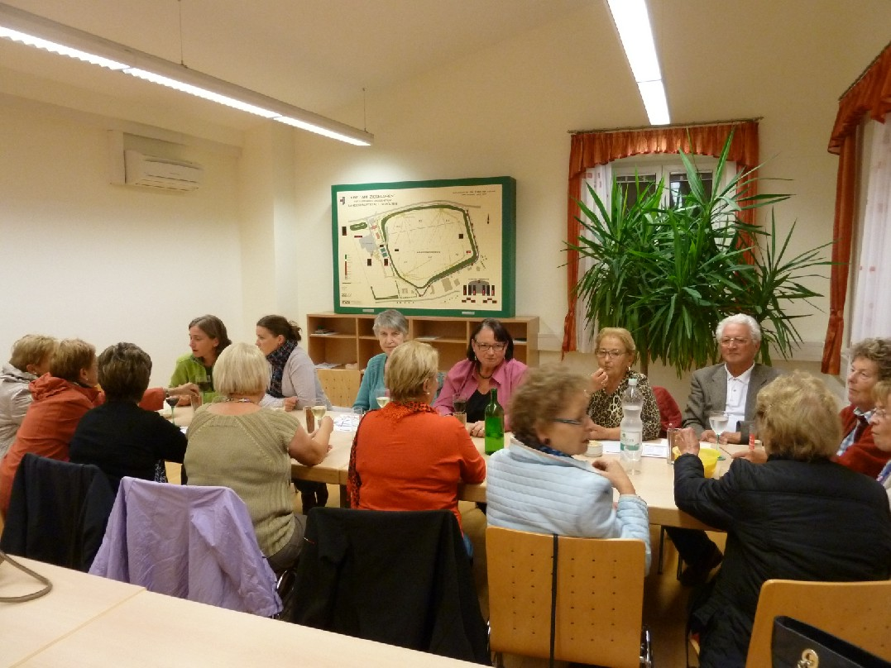

Motto: Frauen gemeinsam auf dem Weg
Die gemeinsamen Abende finden jeweils am zweiten Mittwoch im Monat statt.
Das Programm richtet sich nach Themen, die immer am Ende eines Arbeitsjahres gesammelt werden. Für Vorschläge und Anregungen sind wir sehr dankbar, da dadurch ein größerer Personenkreis angesprochen werden kann.
Zielpublikum: Alle Frauen, die gerne ein paar Stunden im Kreis Gleichgesinnter verbringen möchten.

Kontaktpersonen: Anne Grüneis - Gerda Rosner